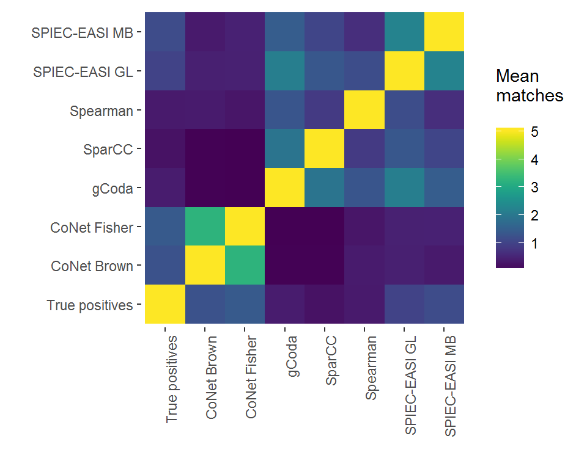
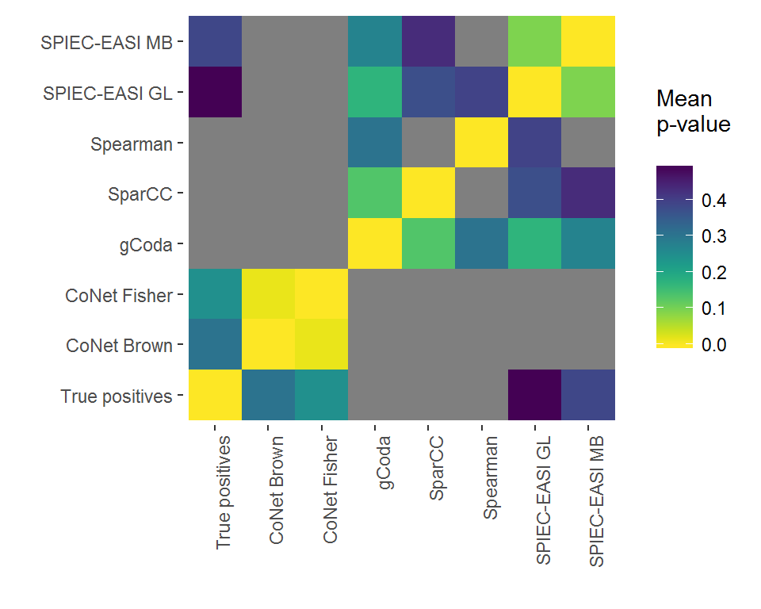
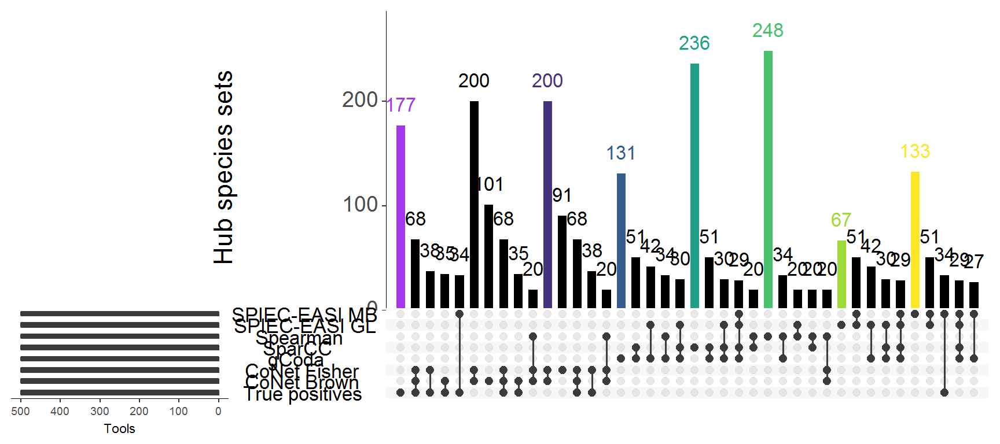

In this simulation, we used the generalized Lotka-Volterra equation to generate these datasets. Because Klemm-Eguíluz matrices share properties with known biological networks, these matrices can be used to study whether network inference tools are able to correctly identify hubs from a dataset.
Because these sections of code take a long time to run, we are visualizing data that is included in the “data” folder in this repository. However, the code below shows how it was generated.
setname = "_hub"
wdir="insertfilepath" # Needs to be supplied for the other sections of code to restore your filepath
setwd(wdir)
allhubklemm = NetworkUtils::generateKlemms(100, 100, 10, 0.05) # the generateKlemms function has two outputs:
hubklemms = allklemm[[1]] # a matrix with interaction strengths, used to generate datasets
hubklemmadj=allklemm[[2]] # an adjacency matrix, used to evaluate inferred networks
# This function generates the datasets
hubdata = generateSets(n=100, klemms=hubklemms, species=100, samples=80, x=1, mode="env", name=setname)
# We ran CoNet and SparCC from a VM; make sure you set the working directory correctly before using writeSets or writeFeatures
writeSets(n=100, x=1, hubdata)Just like before, we are not running this code; especially gCoda can take a long time to run when environmental strength becomes greater. The results are in the “data/Hub species networks” folder. The callTools function wraps several network inference tools that can be called from R and stores the output to the current working directory. For CoNet and SparCC, we used virtual machines. The bash scripts to run these tools are also included in the “data” folder, and just need to be modified to run from 1 to 100.
# This function runs network inference and analyses the inferred networks
callTools(hubdata, hubklemmadj, toolnames=c("SpiecEasi GL", "SpiecEasi MB", "gCoda", "Spearman"), setname, x=1, n=100, absolute = TRUE, mode="env")
# After running bashscript_CoNet.bash, this function can be used to parse the CoNet output
readCoNet(name="brown", mode="hubs", x=1, n=100, alldata=hubdata, setname=set4, tool="CoNet Brown", klemmadj=hubklemmadj, wdir=wdir)
readCoNet(name="fisher", mode="hubs", x=1, n=100, alldata=hubdata, setname=set4, tool="CoNet Fisher", klemmadj=hubklemmadj, wdir=wdir)
readSpar(n=100, x=1, mode="hubs", alldata=hubdata, setname=set4, klemmadj=hubklemmadj, wdir=wdir)The results can be visualized using the functions in this package. We load the network files from the data folder.
library("ggplot2")
#> Warning: package 'ggplot2' was built under R version 3.4.3
library("NetworkUtils")
library("SuperExactTest")
#> Warning: package 'SuperExactTest' was built under R version 3.4.3
#> Loading required package: grid
#>
#> Attaching package: 'SuperExactTest'
#> The following object is masked from 'package:igraph':
#>
#> union
#> The following objects are masked from 'package:base':
#>
#> intersect, union
library("viridis")
#> Warning: package 'viridis' was built under R version 3.4.3
#> Loading required package: viridisLite
col1 = viridis(8)
col1[4] = "#A437EE"
col1[1] = "#000000"
col2 = c(col1[1:3], col1[5:8])
col1 = c(col1[1:3], col1[5:8], col1[4])
col3 = c("#A437EE", col2)
n = 100
x = 1
spiecmb = readRDS("../../data/Hub species networks/SpiecEasi MB_hubs_networks.rds")
spiecgl = readRDS("../../data/Hub species networks/SpiecEasi GL_hubs_networks.rds")
spear = readRDS("../../data/Hub species networks/Spearman_hubs_networks.rds")
spar = readRDS("../../data/Hub species networks/SparCC_hubs_networks.rds")
coda = readRDS("../../data/Hub species networks/gCoda_hubs_networks.rds")
fisher = readRDS("../../data/Hub species networks/CoNet_fisher_hubs_networks.rds")
brown = readRDS("../../data/Hub species networks/CoNet_brown_hubs_networks.rds")
hubklemmadj = readRDS("../../data/hubklemm_adj.rds")
tools = c("True positives", "CoNet Brown", "CoNet Fisher", "gCoda","SparCC", "Spearman", "SPIEC-EASI GL", "SPIEC-EASI MB")
results = list(hubklemmadj, brown, fisher, coda, spar, spear, spiecgl, spiecmb)
num = 5
# Returns a list of the top # num hub species
hubs = analyseHubs(results, tools, n = 100, mode="hub", num)
central = analyseHubs(results, tools, n = 100, mode="central", num)
# Calculates degree and centrality
degrees = analyseDeg(results, tools, n = 100, mode="hub")
centralscores = analyseDeg(results, tools, n = 100, mode="central")
degrees$X1 = factor(degrees$X1, levels=levels(degrees$X1)[c(8,1,2,3,4,5,6,7)])
centralscores$X1 = factor(centralscores$X1, levels=levels(centralscores$X1)[c(8,1,2,3,4,5,6,7)])
# Generates a Superset compatible dataframe and produces figures
dataset = plotSuperSet(hubs, tools, num, plot=TRUE)
centralset = plotSuperSet(central, tools, num, plot=TRUE)
dataset[[1]]
dataset[[2]]
# The UpSet library provides convenient functions for visualization of intersecting sets
library(UpSetR)
#>
#> Attaching package: 'UpSetR'
#> The following object is masked from 'package:lattice':
#>
#> histogram
hubset = plotUpset(hubs, tools)
centralset = plotUpset(central, tools)
string = c(col1[8], rep("Black", 4), col1[1], rep("Black", 4), col1[2], rep("Black", 4),
col1[3], rep("Black", 4), col1[4], rep("Black", 4),
col1[5], rep("Black", 4), col1[6], rep("Black", 4), col1[7], rep("Black", 4))
upset(hubset, text.scale = c(2, 2, 1, 1, 1.8, 2), sets = tools, keep.order=TRUE, order.by="freq", cutoff = 5, group.by="sets", sets.x.label = "Tools", mainbar.y.label = "Hub species sets", main.bar.color=string)